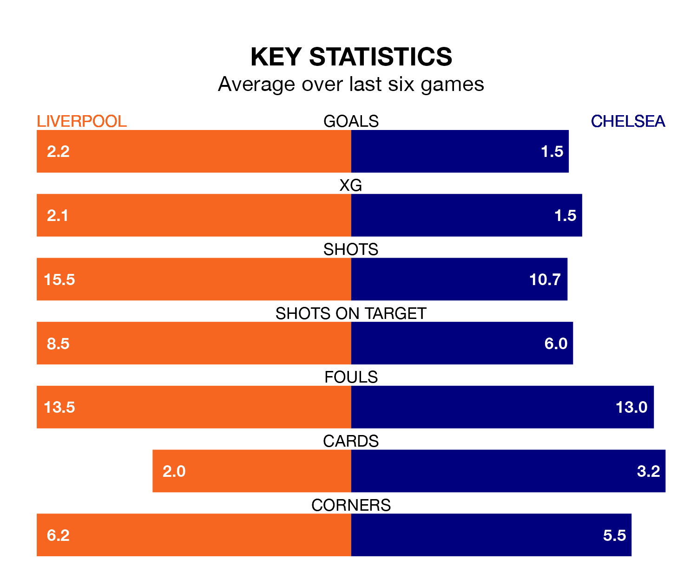

Liverpool and Chelsea both come into Wednesday's late game at Anfield on the back of winning runs in the Premier League.
The two sides have each won their last three matches, and the Reds have collected 14 points from their last six games, while Chelsea have taken 12.
Liverpool are top of the table after 21 games, of which they have won 14 and drawn six, earning 48 points.
Chelsea are eight places behind the Reds in ninth, with nine wins and four draws putting them on 31 points.
With 47 goals in 21 games so far this season, the hosts are the league's second-highest scorers with 2.2 goals per game. And they are conceding fewer than average, letting in 18 goals at a rate of 0.9 per game.
The Blues are also above average scorers, with 1.7 goals per game, compared to a league average of 1.6. They have conceded 1.5 goals per game.
In Mohamed Salah, Liverpool have the league's sharpest shooter so far this season. He has notched 14 goals in 20 appearances.
His goal rate of one every 125 minutes is quicker than that of Nicolas Jackson, the away side's top scorer with a goal every 208 minutes, and a total of seven goals in 19 games.
In the last 10 years, Liverpool and Chelsea have played each other on 28 occasions. Liverpool won six of them, Chelsea eight, and they drew 14 times.
On average, the Reds scored 1.1 goals and the Blues 1.1 in those matches.
Their last meeting was on August 13, when they played out a 1-1 draw.
Liverpool's last match was on January 21, a 4-0 win against AFC Bournemouth, with Darwin Núñez (two) and Diogo Jota (two) getting the goals for the Reds.
Chelsea beat Fulham 1-0 last time out, on January 13, with Cole Palmer on the scoresheet.
Updated: 09:18 (UTC), 23/01/24